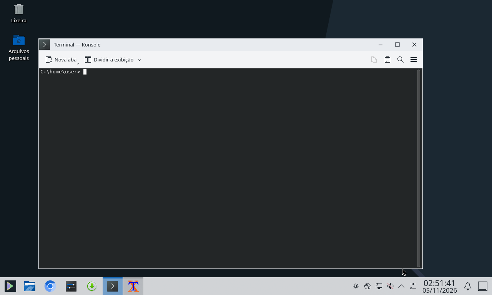
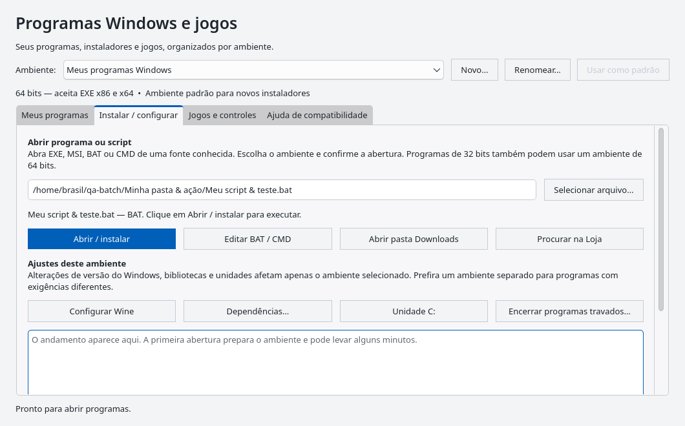

Procure por Terminal no menu Iniciar. O prompt mostra a pasta atual. Use cd para mudar de pasta e pwd para ver o caminho Linux completo. Para executar um .bat, clique nele com o botão direito no Explorador e escolha Executar script Windows…. O funcionamento depende dos comandos e programas usados pelo arquivo.

